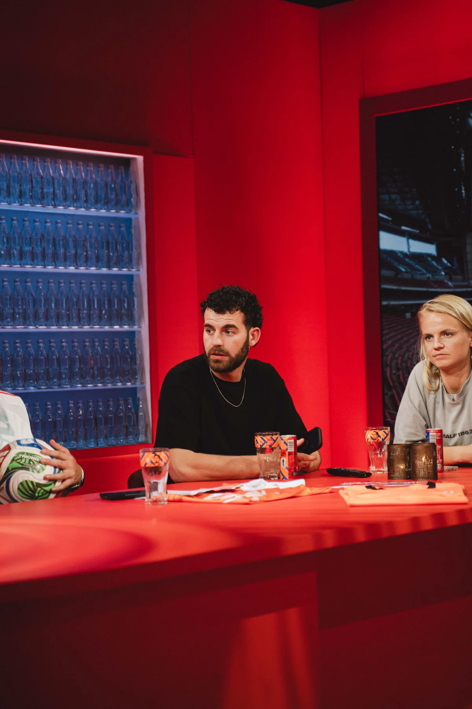
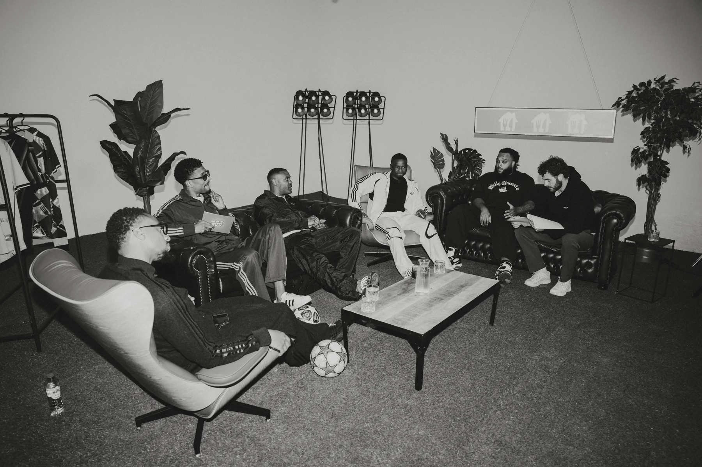

Bruce TolFreelance eindredacteur
Inhoud. Vorm. Impact.Goedeverhalen.Sterkverteld.
Een scherpe blik. De juiste vragen.
En altijd oog voor het verhaal.

Midden in het verhaal.BT / 01
Het verhaal voorop
Het medium verandert.
Een goed verhaal blijft.
Als eindredacteur help ik programma’s sterker te maken. Ik denk mee over de inhoud, het verhaal en de vorm, met de kijker of luisteraar altijd voor ogen. Dat doe ik voor televisie, radio, podcasts en online producties.
01 / Portfolio
Werk waar ik
trots op ben.
Een selectie van programma’s en producties waaraan ik met veel plezier werk of heb gewerkt.

02 / De maker
Scherp op inhoud.
Ruimte voor
creativiteit.
Mijn naam is Bruce Tol. Ik ben eindredacteur, meedenker en nieuwsgierig naar ieder verhaal.
Ik houd van makers met een goed idee, verhalen die ergens over gaan en programma’s die de moeite waard zijn om te maken én om naar te kijken of luisteren.
Mijn kracht is overzicht houden en scherp blijven op de inhoud, met ruimte voor creativiteit. Ik denk mee, stel vragen, stuur bij waar nodig en weet wanneer je juist moet loslaten.
Laten we kennismaken03 / In beeld
Druk maar op play.
Een idee begint met een gesprek
04 / Contact